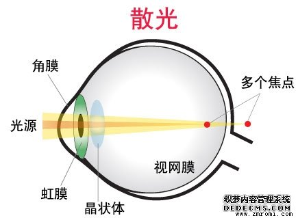
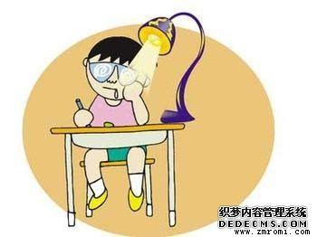
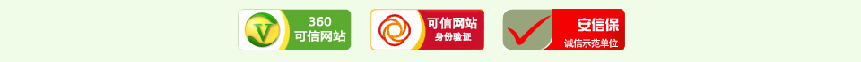

真实案例
当前位置:主页>真实案例>
-
日期：2016-9-21 12:12:12 点击：236 好评：0
真目明官网讯： 家住西安市新城区的李林，小小的年纪就被近视困扰着，爸妈也带我到什么近视康复中心去治疗，近视一直未见好，冬季来临了，他的烦恼也来了，带着...
-
日期：2016-9-21 13:14:59 点击：236 好评：0
真目明官网讯： 日常生活中不经意间的一个动作就会影响你的视力，就如 眼睛痒了揉一揉本是件很正常的事情,殊不知常揉眼睛易致眼睛近视散光。散光可令眼睛出现视物不...
-
日期：2016-9-21 14:12:30 点击：236 好评：0
真目明官网讯： 我也近视，记得我从小一直很注意看书写字姿势的，可也早早地就戴上了眼镜，郁闷的是有的同学写字离桌子很近却没事，呵呵。 自从上了大学就一直戴眼镜...
-
日期：2016-9-21 15:20:12 点击：236 好评：0
真目明官网讯： 究竟什么是假性近视和真性近视？小编到现在都分不清楚，也许很多人也跟我一样吧， 近视眼是指在无调节状态下平行光线经眼屈光系统屈折后，成像在在视...
-
日期：2016-9-21 16:49:30 点击：236 好评：0
真目明官网讯： 现在不管是青少年还是儿童，近视的都很多，要多看预防近视的文章，提前保护自己的眼睛。 预防近视不仅仅是青少年的事情，不少儿童宝宝患上近视眼的几...
-
日期：2016-9-21 12:12:12 点击：236 好评：0
【返回上一页】真目明官网讯：
家住西安市新城区的李林，小小的年纪就被近视困扰着，爸妈也带我到什么近视康复中心去治疗，近视一直未见好，冬季来临了，他的烦恼也来了，带着眼镜总是被雨和雪‘覆盖’，看不清眼前的事物和人，有次别人给我打招呼，过去了才意识到是跟我打招呼的，弄的现在同事都不给我打招呼了，弄的我也很无语，其实我也不是故意的，心想我一定要治好我的近视，一次同学聚会上，我记得我以前的那个同学是近视的，我说你带的隐形眼镜，他说没啊，我说你是怎么治疗好的，给我说说呗，他说他用的真目明潜能激活平衡膏，当时我就记下了，回去后我就订购了该产品，确实效果不错，比我想想的要好，真心感谢！ 真目明官网希望能治愈更多近视的朋友，更多恢复视力的案例请看真目明真实案例。 真目明真心关爱孩子，关爱孩子的眼睛健康。 真目明官网祝眼睛近视的朋友早日康复！ 内容来自真目明官网，未经允许不得转载。
-
日期：2016-9-21 13:14:59 点击：236 好评：0
【返回上一页】真目明官网讯：
日常生活中不经意间的一个动作就会影响你的视力，就如眼睛痒了揉一揉本是件很正常的事情,殊不知常揉眼睛易致眼睛近视散光。散光可令眼睛出现视物不清，促使近视更深。 小心揉眼睛成了散光的杀手 正常的角膜表面应像个篮球是圆形的，其水平、垂直或斜向的屈率半径均相同，光线通过时才会聚焦在同一点上。但散光的角膜表面不圆或橄榄球形，因为水平和垂直的屈光率半径不同，所以无法聚集在同一点上，其所看到的影像可能出现水平或垂直的线条较清楚，但相对90度方向线条则模糊不清。 散光有哪些不良症状? 散光形成原因为角膜弧度不正。多是先天形成，但个别眼皮长霰粒肿长期压迫眼球也会出现散光。散光有近视性的远视性的或一个径线是远视，另一径线是近视的所谓混合性散光。 散光一般都用普通眼镜或隐形眼镜来矫正。散光一般是先天形成的，但也有后天的个别原因能造成乱视，最简单的例子就是;外伤和眼皮长霰粒肿没有及时治疗，会长期压迫眼球而造成散光。在个别情况下散光也会合并假性近视，这时就该去掉假性近视部份，而散光再给予配镜矫正。 勿要经常揉眼睛 眼睛不舒服时用手揉揉是很多人的习惯，眼科专家指出，经常揉眼睛可能引起散光，导致视力模糊。 眼科专科医生在临床调查中发现，人们大都知道患近视眼的人大都伴有散光，这是由角膜弧度改变引起的。但人们却不知道揉眼睛也是导致散光的重要原因。 在调查中发现，一些人眼睛不舒服、患过敏症感到眼睛痒时，会大力揉搓，“揉眼睛时通常会闭上双眼，这时眼球会向上移，揉时的压力便会聚在眼球下方，造成角膜下方的弧度发生变化。角膜弧度不均，便会出现散光。”专家解释。散光也与眼内的晶体有关。如果它的弧度不平均，或晶体老化以致改变了光线进入眼内的折射率，也会造成散光。因此经常揉眼睛会提高患散光的风险，尤其是青少年。 研究人员还指出，严重的散光虽然令人视物不清，但度数不深的散光也有一定作用，75度以下的散光有助看清远处，超过此度数，看远处便模糊。因此，若散光度数在75度以下，配镜时一般都不需在镜片上加上散光矫正的功能。 揉眼睛本身就是件易使眼睛感染炎症的不当做法，此外揉眼睛还易导致眼睛散光，日常生活中眼睛痒或者不舒服的时候应尽量少揉眼睛。 希望能治愈更多近视的朋友，真目明真心关爱孩子，关爱孩子的眼睛健康，祝眼睛近视的朋友早日康复！ 内容来自真目明官网未经允许不得转载。
-
日期：2016-9-21 14:12:30 点击：236 好评：0
【返回上一页】真目明官网讯：
我也近视，记得我从小一直很注意看书写字姿势的，可也早早地就戴上了眼镜，郁闷的是有的同学写字离桌子很近却没事，呵呵。 自从上了大学就一直戴眼镜了，以前只在上课时才戴的。现在已经越来越离不开眼镜了，早上起来第一件事就是戴眼镜，都成习惯了。 现在工作了也是天天对着电脑，每天大部分时间都是花在电脑上， 晚上九点钟开始上网一直到现在眼睛都没离开过屏幕——我通常都是这样，要么不看，一看至少二三个小时，甚至厕所都会懒得上...所以每天睡觉前眼睛都累得不行，现在还好，用了真目明眼膏之后再睡觉眼睛会舒服很多。 现在工作了也是天天对着电脑，每天大部分时间都是花在电脑上， 晚上九点钟开始上网一直到现在眼睛都没离开过屏幕——我通常都是这样，要么不看，一看至少二三个小时，甚至厕所都会懒得上...所以每天睡觉前眼睛都累得不行，现在还好，用了真目明眼膏之后再睡觉眼睛会舒服很多。 真目明眼膏有效补充眼部所需的微量元素.如：叶黄素，维生素A，维生素C，用最先进的技术从万寿 菊，密蒙花等天然植物萃取，通过科技手 段将膏体与油性封装在一起，抑菌、杀菌,滋养 角膜，补充泪液，从而使眼部供氧丰富，激活睫状体弹性，舒缓睫状肌痉挛，恢复 晶状体 弹性. ，视疲劳症状得以缓解。 希望能治愈更多近视的朋友，真目明真心关爱孩子，关爱孩子的眼睛健康，祝眼睛近视的朋友早日康复！ 内容来自真目明官网未经允许不得转载。
-
日期：2016-9-21 15:20:12 点击：236 好评：0
【返回上一页】真目明官网讯：
究竟什么是假性近视和真性近视？小编到现在都分不清楚，也许很多人也跟我一样吧，近视眼是指在无调节状态下平行光线经眼屈光系统屈折后，成像在在视网膜前，使远距离物体不能清晰地在视网膜上成像。近视眼看远模糊，看近清晰。近视眼按近视程度分：轻度近视眼：小于300度,中度近视眼：300-600度,高度近视眼：大于600度。 假性近视是真性近视眼之前的一种疲劳状态，如果这种状态不能及时缓解，眼睛发生了器质性改变就形成了真性近视。 孩子一旦患了近视眼，家长便十分着急，常常咨询“近视眼有治吗？”“我的孩子是真性近视还是假性近视？”这就须要了解一下真假近视眼。 所谓假性近视是真性近视眼之前的一种疲劳状态，如果这种状态不能及时缓解，眼睛发生了器质性改变就形成了真性近视。判断真假近视眼需要做散瞳验光。一提散瞳验光家长便紧张起来，“散瞳对眼睛有害吗？”散瞳的目的是解除眼睛疲劳，让紧张调节的肌肉放松，这样验出的屈光度才是准确的。如果散瞳后裸眼视力能够达到1.0，那就是“假性近视”，在短期内能治愈，比如药物、针灸、埋耳针及理疗仪器的使用，可使紧张的肌肉放松，疲劳缓解，视力恢复到正常状态。如不想治疗，只要让眼睛眺望远方，注意休息，视力也有可能恢复。 如果散瞳后裸眼视力低于0.8，就是“真性近视”了。真性近视眼一旦形成不可逆转，它是眼球发生的器质性改变，眼球的前后轴变长，外界物象通过眼睛的屈光系统成像在视网膜前，视网膜上没有清晰的物象，当然就不会有良好的视力了。这种器质性改变除了手术外，任何方法不能使眼球缩短、屈光度改变，这就是近视眼难以治愈的原因。 目前眼睛的各种屈光手术，是唯一可治疗近视眼、降低屈光度的方法。比如，准分子激光角膜切削术（简称PRK）、激光基质内原位角膜磨镶术（简称LASIK）等，是在计算机控制下，用激光将角膜前弹力层和基质层的一部分组织细胞分解，形成极小的可挥发碎片，使角膜弯曲度变平，以达到矫正近视眼的目的。但这些手术一定要等到20岁以后，眼球停止发育才可进行。由于这些手术仅仅是在角膜上做一些物理性改变，所以对眼底退化的病理性近视眼无能为力，因为病理性近视眼手术后近视度数仍不断加深，过一段日子还要重新戴上眼镜。 希望能治愈更多近视的朋友，真目明真心关爱孩子，关爱孩子的眼睛健康，祝眼睛近视的朋友早日康复！ 内容来自真目明官网未经允许不得转载。
-
日期：2016-9-21 16:49:30 点击：236 好评：0
【返回上一页】真目明官网讯：
现在不管是青少年还是儿童，近视的都很多，要多看预防近视的文章，提前保护自己的眼睛。预防近视不仅仅是青少年的事情，不少儿童宝宝患上近视眼的几率也不少，以下几种宝宝最易患上近视，家长们需警惕！ 哪些宝宝需警惕近视眼 属于容易患上近视的类型如下： 1. 睡觉时间少的孩子易患近视眼。在儿童生长发育的加速期，特别是7－9岁和12－14岁时，如果孩子睡眠时间减少，或人为剥夺睡眠时间（功课负担过重），会引起部分儿童发生近视眼。 2. 低出生体重的孩子易患近视眼。凡出生时体重小于2500克的小儿，其在青春期前容易发生近视眼。这主要由于低出生体重儿童的先天发育不良，后天遇到不良因素导致眼轴发育过长所致。 3. 早产儿童易发生近视眼。早产2周或2周以上的小儿，其在儿童期常发生近视眼。这些儿童发生近视眼的机理，与低出生体重儿童发生近视眼的机理是一样的。 4. 父母为近视眼，其子女易患近视眼。近视的遗传程度随度数的加深而增加。一般来说，300度以下的近视与遗传关系不大；300－600度的近视与遗传关系密切；600度以上的近视几乎都与遗传有关. 正常情况下，宝宝出生3个月时，视力为0.012－0.02，6个月视力为0.05，因此l岁以内的小孩远视能力是比较差的，l岁时为0.2，以后每增加l岁视力约增加0.2，5岁时视力达到正常1.0，12岁孩子眼球发育完全成熟。 如果孩子的眼睛没有问题，在这一时期一般不易发生近视。但由于眼球发育异常或有近视遗传因素，在此期间就可影响到孩子的视力，因此尽早检查视力是及时发现孩子近视的最好方法。 以上四种宝宝最易患上近视了，如果你家孩子属于这些类型之一的，家长需要提高警惕，定期检查宝宝视力，帮助宝宝做好预防工作了。 希望能治愈更多近视的朋友，真目明真心关爱孩子，关爱孩子的眼睛健康，祝眼睛近视的朋友早日康复！ 内容来自真目明官网未经允许不得转载。
- 1、用湿巾或毛巾清洗眼部周 围，把手也清洗干净
- 2、取黄豆粒大小涂于颈椎部搓热，效果更明显
- 3、每只眼睛取绿豆粒大小，涂于眼眶及周围涂抹均匀
- 4、按摩时注意力度，感到眼睛有微热感为最佳
- 5、闭目休息1-3分钟
- 6、眺望远方1-5分钟,适当转动眼球数次
注意：每日1-3次，两盒为一个周期
- 1. 青少年近视、弱视及眼疲劳者
- 2. 成年人近视、视觉疲劳、眼干、眼涩
- 3. 电脑工作者
- 4. 眼疾亚健康人群
- 5. 老年人老花眼

官网销售，正品认证！如果您在本站购买的产品属仿冒产品，我们将十倍赔偿！
郑州三富科技有限公司
